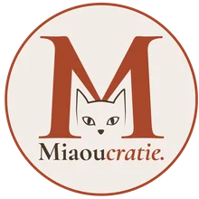
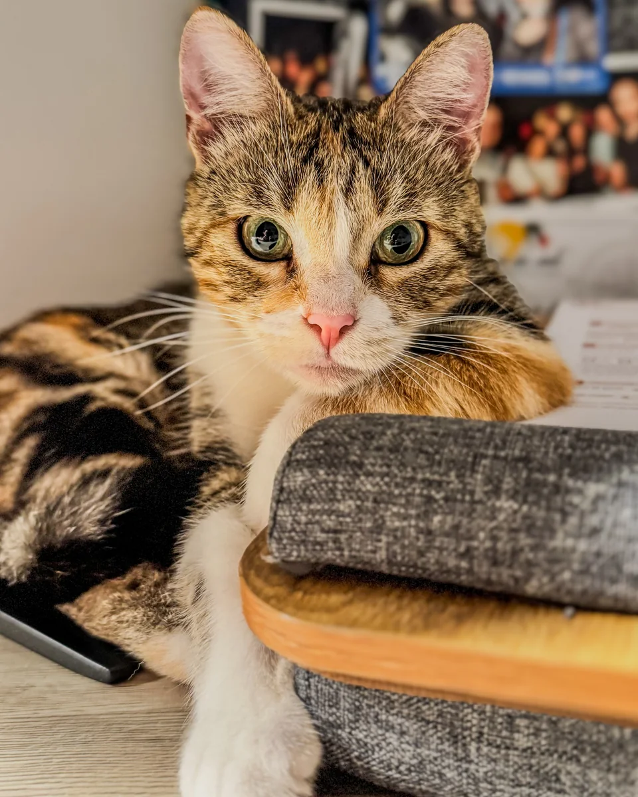
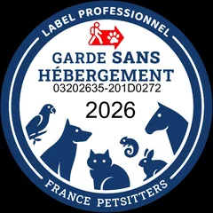
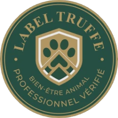

🐾 Cat-sitting professionnel
Garde de chats à domicile
à Domagné et alentours
Nourrir un chat, c'est un geste. S'en occuper, c'est un métier.
Je viens chez vous, à ses horaires et dans ses repères.
Je prends le temps qu'il faut avec lui.
Et vous recevez un compte-rendu après chaque passage.
📍 Domagné, Châteaubourg, Châteaugiron, Vitré, Janzé & alentours
5,0 · 16 avis Google Vu dans la presse locale
À partir de 18 € la visite (45 min minimum) · Pré-visite offerte · Réponse sous 24 à 48 h

Ce qu'il vit quand vous n'êtes pas là
- Ses repères, gardés intacts Repas, eau, litière, aux mêmes heures.
- Quelqu'un qui veille sur lui Appétit, comportement, mobilité, litière.
- De la compagnie, à son rythme Du jeu, des câlins ou une présence calme.
- Et vous, informé après chaque visite Compte-rendu, photos et vidéos.
Je ne force jamais le contact avec un chat timide.
Il reste dans ses repères
Pas de transport, pas de pension, pas d'odeurs inconnues, pas de stress inutile.
Chaque chat est traité comme un individu
Un chat timide, âgé, joueur ou anxieux n'a pas besoin de la même approche.
Vous savez ce qui se passe
Le suivi après chaque passage vous évite l'incertitude et les relances inutiles.
Pourquoi Miaoucratie
Vous ne confiez pas votre chat à n'importe qui
Responsabilité Civile Professionnelle
« Je fais comme j'aimerais qu'on le fasse pour moi : vous savez ce qu'il a mangé, où il s'est installé, s'il est venu ou s'il a boudé. »
🎓 Certification ACACED Chat
Connaissances validées officiellement pour exercer auprès des animaux domestiques.
🐾 10+ ans en protection féline
Expérience associative auprès de chats en attente d'adoption, en socialisation ou en convalescence.
🏠 Famille d'accueil expérimentée
Habitude de gérer des profils félins variés, avec des besoins très différents selon les individus.
🐱 6 chats au quotidien
Observation régulière des comportements et repérage rapide d'un changement inhabituel.

Label Pro France Petsitters : garantit que Miaoucratie exerce conformément à la réglementation et aux bonnes pratiques de la profession.

Label Truffe : valorise les professionnels animaliers sélectionnés pour leurs pratiques éthiques, respectueuses de l’éthologie et du bien-être animal.
Une reconnaissance qui correspond à ma façon de travailler.
Ce qu'en disent les propriétaires
Des chats sereins, des humains rassurés
Merci Irina pour les soins et attentions apportés à notre chat pendant nos vacances. Je recommande vivement Miaoucratie pour son professionnalisme, sa réactivité et anticipation face aux situations d'urgence pour l'animal. 😻
Je recommande fortement Miaoucratie, une personne formidable avec les chats, peu importe leur âge ainsi que leur comportement. Nous avons reçu de très belles photos et vidéos. Prix raisonnable pour tout ce qui est mis en place, que ce soit pour les jeux de recherche ou leurs soins de brossage. Le feeling avec nos 2 chats s'est très bien passé.
Irina a été d'une grande aide pendant nos congés tant au niveau de la garde, des câlins, des conseils... Nous étions vraiment rassurés de savoir notre chat entre ses mains car tous les jours nous avions des photos et des comptes rendus. Elle est vraiment pertinente et réalise parfaitement son travail. Nous referons appel à ses services sans problème les yeux fermés.
Une réelle chance d'avoir rencontré Irina ! Son professionnalisme allié à son sens de l'écoute nous ont permis de partir en vacances sereinement. Notre chat a été pris en compte dans ses besoins et choyé grâce à Irina. C'est les yeux fermés que nous ferons de nouveau appel à Miaoucratie et Irina, une professionnelle de confiance !
Très bonne expérience, une garde sérieuse et professionnelle avec un rapport détaillé, photos et vidéos quotidiennes. Je recommande fortement.
Expérience plus que concluante. Des messages quotidiens avec un compte-rendu étayé, des photos et vidéos, la confiance est totale et je recommande vivement Irina qui a un super feeling avec les chats. Je lui souhaite pleine réussite dans son travail de pet sitter. Sans hésiter, je lui confierai à nouveau Pim's.
Irina est une personne très professionnelle. Je lui ai confié mon Cookie 1 semaine. Première fois que je laissais mon chat à une personne autre qu'une amie. Irina s'est très bien occupée de mon Cookie pendant toute cette semaine, j'ai eu des messages, des photos, des vidéos et j'ai vu un chat très heureux et épanoui. Un chat qui a besoin de sortir souvent malgré sa maladie, je l'ai vu en pleine forme, elle est restée avec Cookie le temps qu'il fallait. Je recommande vivement Irina, elle prend le temps avec nos animaux. Je referais appel à Irina si besoin sans problème. Merci encore Irina. 😊
Irina s'est occupée de Glue pendant 1 semaine. Tout s'est bien passé, j'ai eu des vidéos et photos chaque jour. Glue était épanouie et heureuse (a même pu faire son sport autour de la table haha). Irina est une personne de confiance, douce, et d'une gentillesse incroyable. Je recommande +++ Encore merci pour tout !
Une première pour nous de laisser nos clefs et notre chat en notre absence, tout s'est très bien passé. Irina a pris le temps qu'il fallait avec notre chat, a été très attentive à lui surtout pendant la canicule et nous attendions ses comptes rendus détaillés et ses photos avec impatience ! Nous avons eu quelques conseils au passage ce qui est un vrai + ! Nous repasserons par Irina les yeux fermés et je la recommande, c'est un bonheur d'avoir à faire à une personne passionnée !
C'est la première fois que je confiais mon chat pour partir en vacances, et je suis ravie du travail d'Irina. Elle a pris le temps d'apporter à mon chat tous les soins dont il avait besoin, et de me donner des nouvelles quotidiennement. Je ferais appel à elle à nouveau sans aucune hésitation. Merci encore !
Rien à dire, après bientôt deux semaines de visite pour mes deux chats je les retrouve en pleine forme et épanouis ! Je recommande sans hésiter une seule seconde ! Encore merci nounou 🐈
Signé Mynö et Taö 🐾
Très bonne expérience avec Irina, qui est très professionnelle. Elle s'est occupée de nos 2 chats pendant une semaine. Chaque jour, nous avions des nouvelles et des vidéos, ce qui nous a vite rassurés sur le bien-être de nos petits compagnons. Nous avons déjà réservé ses services pour nos prochaines vacances.
Première expérience avec Irina et Miaoucratie, et la prestation a été parfaite et très professionnelle. Je recommande vivement.
Nous avons fait appel plusieurs fois à Irina pour garder nos chats. Irina est très professionnelle et a pris grand soin de nos petits chats ! Nous recommandons vivement.
Irina s'est occupée plusieurs fois de mon matou pendant mes vacances, ça s'est toujours super bien passé ! C'est une vraie pro qui connaît bien le comportement félin et fait son boulot avec responsabilité, douceur et attention. J'étais toujours tranquille en partant, car on était régulièrement en contact, avec des nouvelles et des photos tous les jours. Je la recommande à 110 %.
Super cat-sitter qui n'hésite pas à passer le temps qu'il faut avec les chats, au moins 30 minutes mais souvent plus. Pour eux, le stress est minimisé, et ça se passe très bien à chaque fois ! Elle se déplace sans problème jusqu'à ma commune, qui n'est pas si proche (Piré-sur-Seiche), et envoie des détails sur le déroulement de la visite ainsi que des photos, ce qui est rassurant.
Détail des prestations
Une visite utile, calme, et pensée pour le chat
Soins quotidiens
- Distribution croquettes / pâtée selon vos consignes
- Nettoyage des gamelles, fontaine ou distributeur
- Entretien de la litière et du coin où elle se trouve
- Nettoyage des salissures liées à l'activité du chat
- Matériel de confort si besoin (alèses, nettoyant enzymatique) : ce que j'utilise
Je m'occupe du chat et de ses espaces, pas du ménage de la maison.
Un œil sur sa santé
- Observation de l'appétit
- Lecture du comportement et de la mobilité
- Vérification des éliminations
- Signalement immédiat en cas d'anomalie
Si un chat mange moins ou change de comportement, je le surveille de près et je vous préviens.
Du temps avec lui
- Jeu si le chat est demandeur
- Présence calme si le chat préfère observer
- Câlins uniquement si le chat les accepte
Je n'impose pas le contact : je m'adapte au rythme du chat.
Certains chats se cachent les premiers jours, c'est normal.
Chats à besoins spécifiques
- Chats âgés, sensibles ou craintifs, chatons
- Traitements oraux, topiques ou en inhalation (comprimés, pommades, gouttes, aérosol)
- Fréquence de visites augmentée si besoin
Une seule limite : les injections et les gestes médicaux relèvent du vétérinaire.
Sécurité sanitaire
- Surchaussures et gants jetables à chaque intervention
- Désinfectant virucide et gel hydroalcoolique
- Stérilisation du matériel réutilisable (brosses, pousse-pilule)
Objectif : ne rien transmettre d'un foyer à l'autre, surtout chez les chats fragiles.
Des nouvelles pour vous
- Compte-rendu complet après chaque passage
- Photos et vidéos à chaque passage, selon ce que le chat accepte
- Communication par WhatsApp, SMS ou mail
Vous partez, mais vous restez informé.
Comment je travaille
En 5 étapes, tout est calé avant votre départ
Échange et devis
On fait le point sur votre chat et vos dates. Je vous envoie un devis.
Pré-visite offerte
Avant ou après le devis. Si on est d'accord : acompte de 30 %, vos dates sont bloquées.
Contrat, clés et garde
Contrat en ligne ou papier à la remise des clés. Puis des nouvelles à chaque visite.
Règlement et restitution
Clés rendues en main propre. Facture à la dernière visite, à régler sous 10 jours.
Où j'interviens
Une zone définie pour garantir des visites fiables
Je pars de Domagné et j'interviens jusqu'à 20 km par la route, avec un peu de souplesse selon les disponibilités. Les communes les plus fréquentes : Domagné, Châteaubourg, Châteaugiron et Vitré. Janzé et d'autres communes du secteur sont possibles selon les tournées.
Au-delà de 20 km et jusqu'à 45 km, c'est possible sur devis, avec des frais de déplacement.
Rennes et les communes hors Ille-et-Vilaine ne sont pas couvertes. Voir la carte
Réservez votre créneau
Parlons de votre chat.
Je garde un nombre limité de chats à la fois pour rester fiable et disponible.
Un premier échange suffit à savoir si je suis la bonne personne pour votre chat.
Pré-visite offerte · Zone locale définie · Réponse sous 24 à 48 h
Vous voulez connaître le tarif exact ? Voir les tarifs de garde de chats